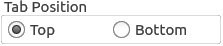

RadioButton QML Type
A radio button with a text label. More...
| Import Statement: | import QtQuick.Controls 1.4 |
| Since: | Qt 5.1 |
| Inherits: |
Detailed Description

A RadioButton is an option button that can be switched on (checked) or off (unchecked). Radio buttons typically present the user with a "one of many" choices. In a group of radio buttons, only one radio button can be checked at a time; if the user selects another button, the previously selected button is switched off.
GroupBox { title: "Tab Position" RowLayout { ExclusiveGroup { id: tabPositionGroup } RadioButton { text: "Top" checked: true exclusiveGroup: tabPositionGroup } RadioButton { text: "Bottom" exclusiveGroup: tabPositionGroup } } }
You can create a custom appearance for a RadioButton by assigning a RadioButtonStyle.